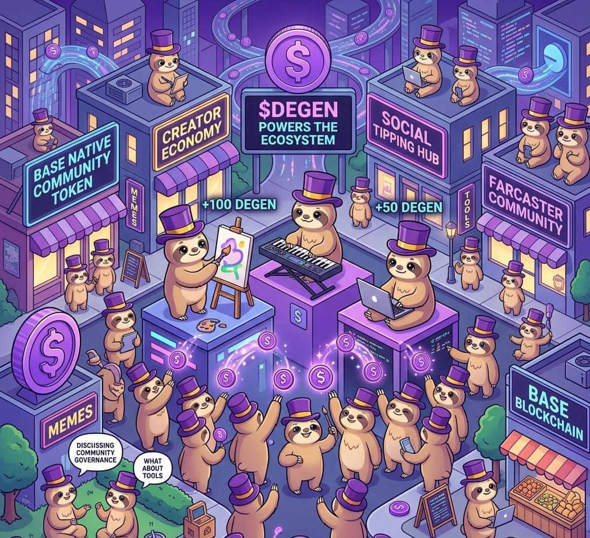

What is $DEGEN
The Base native community token that rewards creators and powers the Degen ecosystem.
Degen (DEGEN) is a community driven cryptocurrency created to reward people for participating in online communities, especially creators who make interesting posts, memes, or helpful content.
It started mainly within the Farcaster ecosystem and became popular among users of Warpcast.
$DEGEN runs on Base, which is a fast and low cost blockchain built on top of Ethereum.
Because of Base:
- Transactions are cheap
- Transfers are very fast
- Small rewards like tips become possible
This makes it perfect for social platforms, where people may want to send small rewards many times.
One of the main goals of $DEGEN is to reward creators.
On many social platforms, people create valuable content but do not earn anything.
With $DEGEN:
- People can tip creators
- Good posts can receive token rewards
- Active community members can earn tokens
For example:
- Someone makes a funny meme
- Someone writes a helpful crypto thread
- Someone builds a tool for the community
Other users can send them $DEGEN as appreciation.
Unlike many crypto projects that are controlled by companies, $DEGEN grew from its community.
The community decides:
- How the ecosystem grows
- What tools should be built
- How the culture evolves
This is why people often call it a "community token."
Degen became popular because people enjoyed the fun, chaotic, and creative "degen culture."
$DEGEN is not only a token it powers an ecosystem.
The ecosystem includes:
- Social tipping
- Community rewards
- Apps and tools
- Meme culture
- Trading markets
The token acts like the fuel that keeps the ecosystem running.
Several things helped $DEGEN grow quickly:
- It started in an active crypto social community
- It rewarded real participation
- It used Base, which is fast and cheap
- It embraced internet meme culture
Because of this, many users see $DEGEN as one of the most interesting community tokens on Base.
